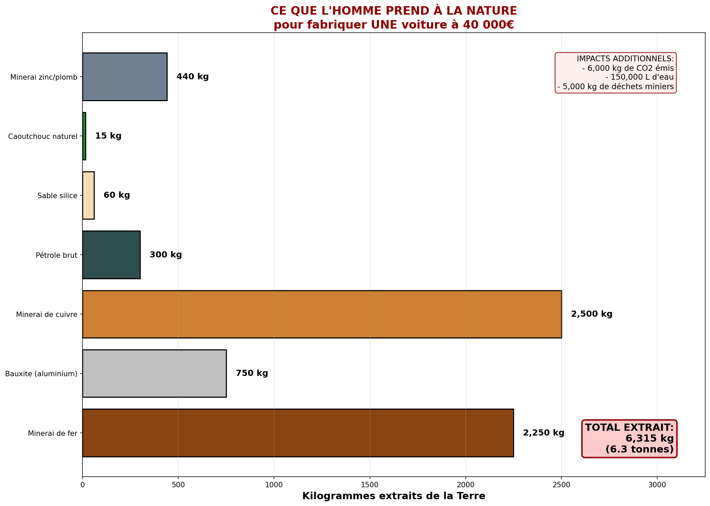
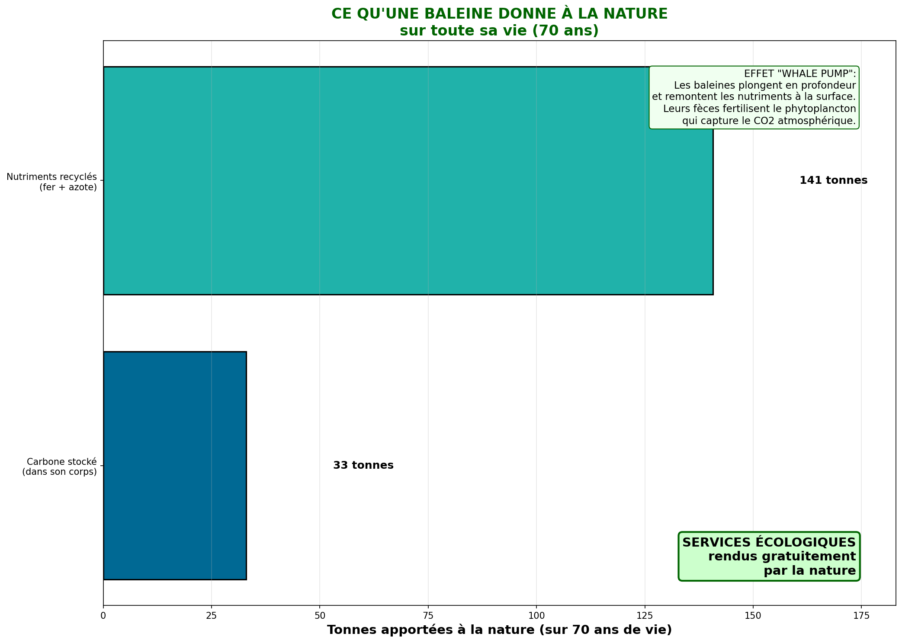
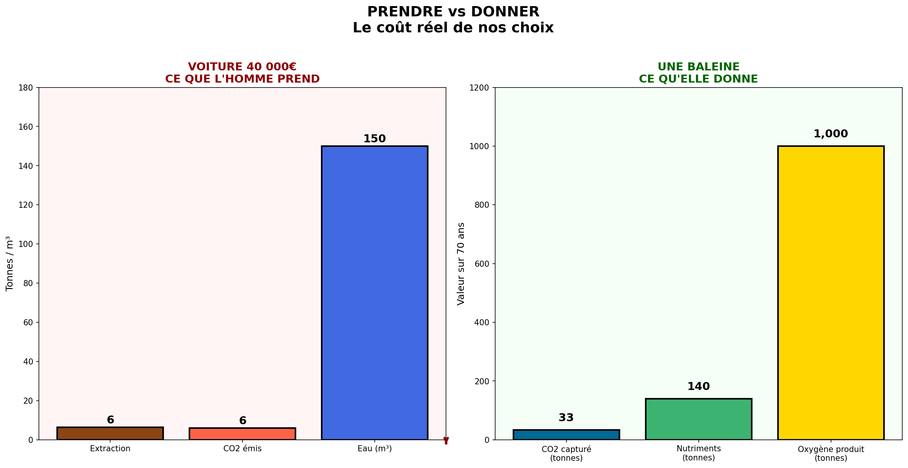
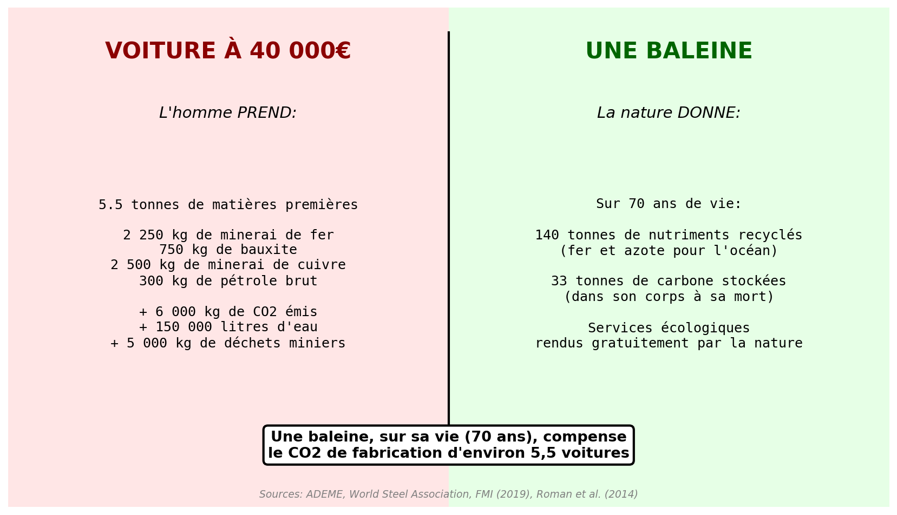

Le paradoxe
Nous fabriquons des voitures en détruisant des écosystèmes, tout en ignorant
les services écologiques gratuits rendus par la nature. Cette étude compare
le coût écologique d'une voiture avec les bénéfices d'une baleine.
Chiffre clé : Une baleine, sur sa vie de 70 ans, compense
le CO2 de fabrication d'environ 5,5 voitures.
Le coût caché d'une voiture
Fabriquer une voiture nécessite d'extraire des quantités massives de
matières premières, avec des ratios d'extraction souvent méconnus.

Sources : World Steel Association, USGS, ADEME
| Matériau |
Quantité/voiture |
Ratio extraction |
Minerai extrait |
| Acier |
900 kg |
2.5:1 |
2 250 kg |
| Aluminium |
150 kg |
5:1 |
750 kg |
| Cuivre |
25 kg |
100:1 |
2 500 kg |
Bilan : 6-8 tonnes de CO2 pour fabriquer une seule voiture,
plus 150 000 litres d'eau consommés.
Les services d'une baleine
Les baleines rendent des services écosystémiques essentiels, totalement gratuits.

Sources : IMF (2019), Pershing et al. (2010), Roman & McCarthy (2010)
Whale Pump : En plongeant en profondeur puis en remontant,
les baleines fertilisent les eaux de surface avec des nutriments (azote, fer),
stimulant la croissance du phytoplancton qui produit 50-80% de notre oxygène.
| Service |
Valeur |
| Carbone stocké (corps) |
33 tonnes par baleine |
| Valeur économique estimée |
2 millions USD (carbone, écotourisme et pêche, sur la vie entière - méthode IMF) |
| Stimulation phytoplancton |
Effet multiplicateur |
La comparaison

Comparaison directe des impacts
Calcul :
- CO2 fabrication voiture : 6 000 kg
- Carbone stocké par une baleine (vie entière, corps) : 33 000 kg
- Ratio : 33 000 / 6 000 = 5,5 voitures
Avec l'hypothèse haute de 8 tonnes de CO2 par voiture (ADEME), le ratio tombe à 4,1 voitures.
Infographie résumé

Vue synthétique de la comparaison
Le message
Conclusion : Il reste aujourd'hui environ 1,3 million de grandes
baleines sur Terre (IMF, Chami et al., 2019). Leur carbone stocké représente au
total environ 43 millions de tonnes de CO2 (1,3 million x 33 tonnes). Face aux
37,4 milliards de tonnes de CO2 fossile émises chaque année dans le monde (Global
Carbon Project, 2024), ce stock ne pèse presque rien : protéger les baleines est
indispensable pour l'océan et le phytoplancton, mais cela ne compense en rien nos
émissions.
La vraie image à retenir est celle de la disproportion : un des plus gros animaux
ayant jamais existé, 70 ans de vie, compense la fabrication de 5 voitures - et
l'industrie en fabrique environ 67,7 millions par an, rien qu'en voitures
particulières (OICA, 2024). Le vrai levier reste de fabriquer moins de voitures.
À retenir :
- Une baleine = environ 5,5 voitures en CO2 (33 tonnes de carbone stockées, contre 6 tonnes émises par voiture)
- Le stock total de carbone de toutes les baleines du monde (~43 millions de tonnes) ne représente qu'une fraction infime des émissions mondiales annuelles (~37,4 milliards de tonnes)
- Protéger les baleines reste indispensable pour l'océan et le phytoplancton, mais ne compense pas nos émissions
- Le vrai levier climatique reste de fabriquer moins de voitures
Correction (juillet 2026) : Cette étude affichait à l'origine
"1 baleine = 385 voitures en CO2", en multipliant les 33 tonnes de carbone stockées
par la baleine (IMF, Chami et al., 2019) par 70 ans de vie, comme si ce chiffre
était un taux annuel. Or ces 33 tonnes sont déjà le total stocké sur toute la vie
de la baleine : le chiffre avait été compté deux fois. Le ratio correct est
33 000 kg / 6 000 kg = 5,5 voitures.